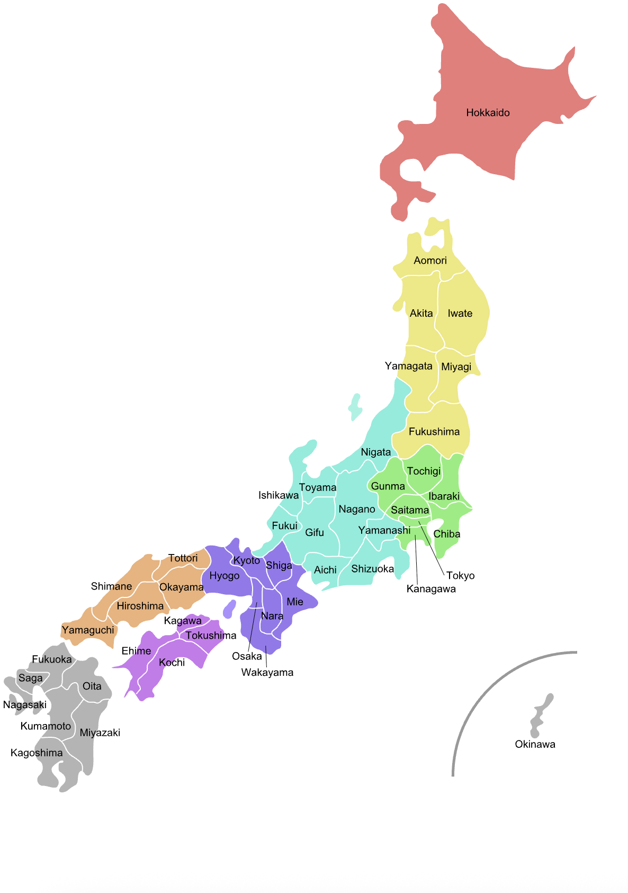
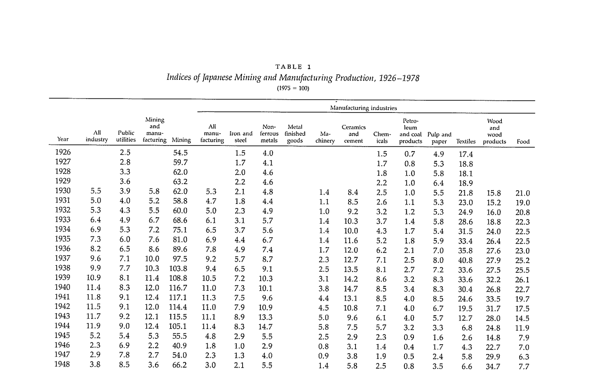
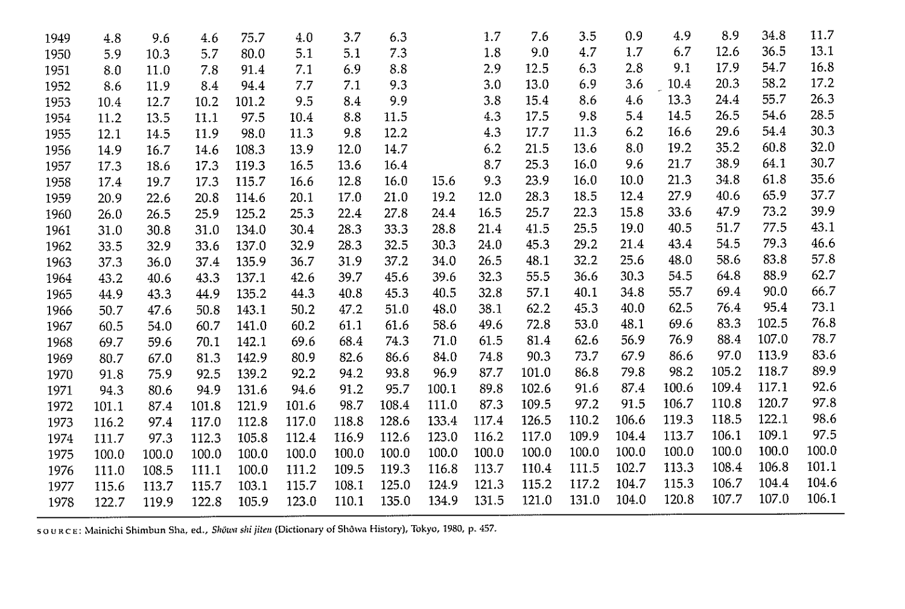
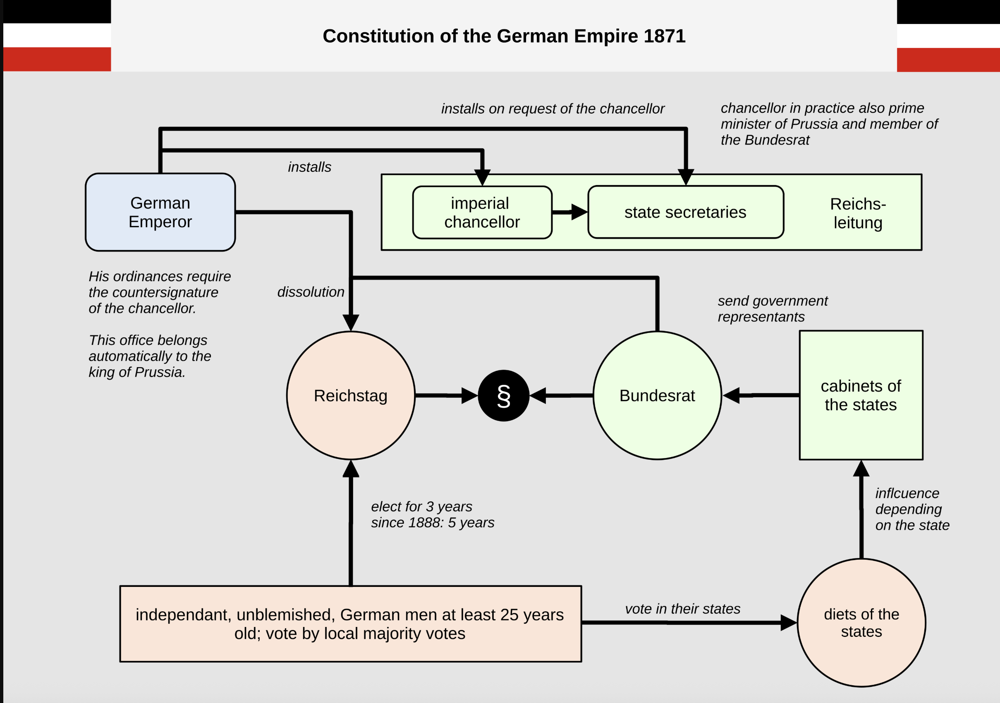
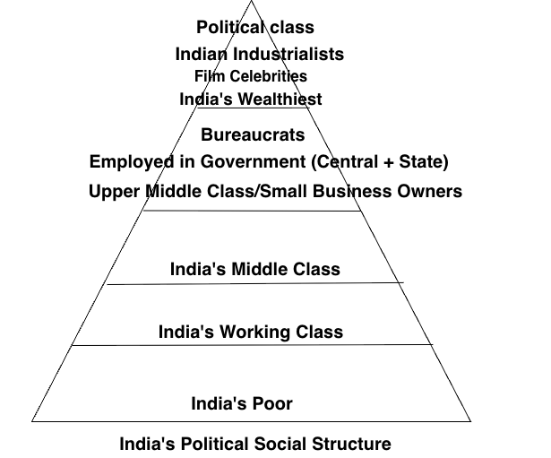
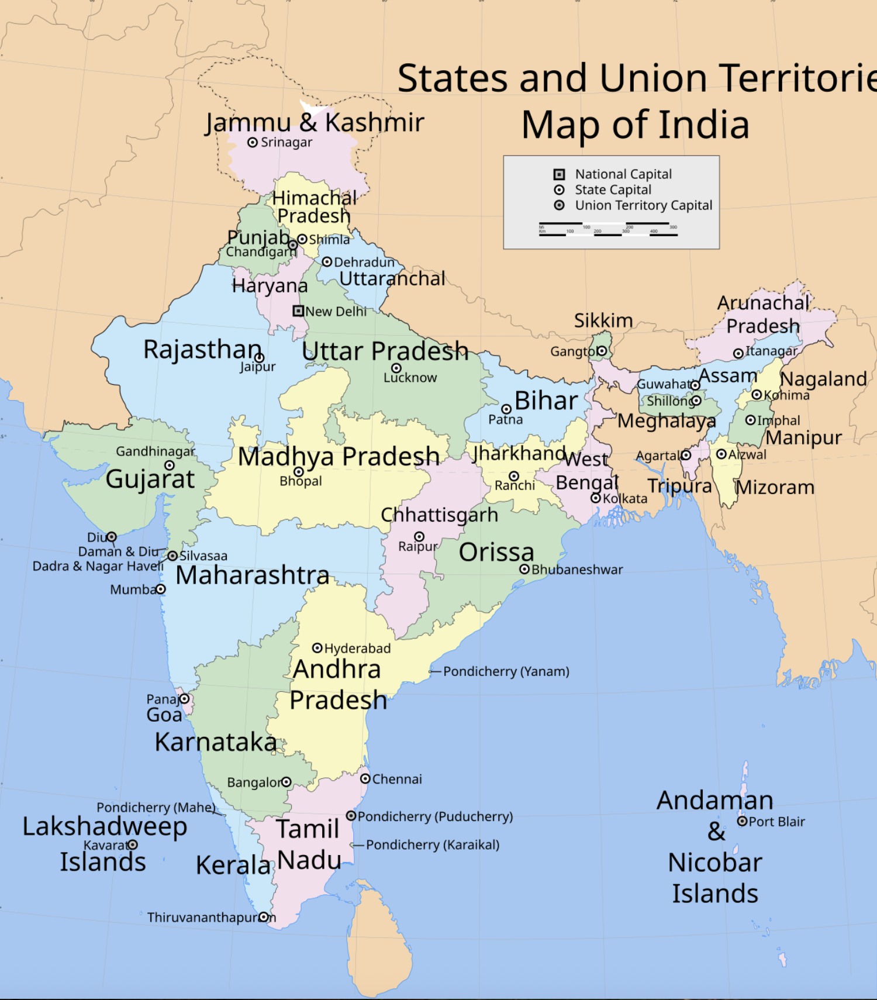

MITI Japan: Industrial Policy of Japan: 1925-1975
Notes and Reflections on India and Japan’s Economic Development
Japan’s The Ministry of International Trade and Industry (MITI)
Notes on modernization of Japan from Chalmers Johnson’s MITI and the Japanese Miracle: The Growth of Industrial Policy, 1925–1975
Chalmers Johnson [1] was an American political scientist, former professor at University of California, San Diego. I truly enjoyed going through The Making of Modern Japan by Marius B. Jansen’s comprehensive book on modernization of Japan[2]. The book is highly detailed and specific.
In this work, Chalmers Johnson focuses on Japanese economic bureaucracy, particularly on the famous Ministry of International Trade and Industry (MITI), as the leading state actor in the economy[3]. In this summary and notes, I hope to compare India and wonder about its paths for modernization. One contention is that India’s intellectuals haven’t seriously engaged with the Japanese model, which is a shame because it offers valuable insights into how a state can effectively drive economic development through strategic industrial policy and bureaucratic coordination. Large parts of India remains feudalism and discussions on structural reforming are not taken seriously, and the political class is more interested in short-term populist measures rather than long-term development strategies. [2], [3]
Outline of the book
- The Japanese Miracle
- The Economic Bureaucracy
- The Rise of Industrial Policy
- Economic General Staff
- From the Ministry of Munitions to MITI
- The Institutions of High-Speed Growth
- Administrative Guidance
- Internationalization
- A Japanese Model?
Collaboration between the state and big business has long been acknowledged as the defining characteristic of the Japanese economic system.
Johnson says, The history of MITI is central to the economic and political history of modern Japan. Equally important, however, the methods and achievements of the Japanese economic bureaucracy are central to the continuing debate between advocates of the communist-type command economies and advocates of the Western-type mixed market economies.
Japan developed a third way between mixed-market, command economy, where, The state and private sector share the developmental role, and both learned to make markets work toward national goals rather than just letting markets run freely or replacing them with bureaucratic directives.

India’s Economic Growth
I wonder about India? Now, I refuse to politicize, Much of the Indian public discourse seems trapped in blame narratives or many parties appear more focused on short-term electoral incentives, than institutional reform.
In Indian political discourse, focusing on Nehru, Congress government or British colonialism is the norm. Currently, the discourse is focused on BJP, Modi, and RSS. To me, this is shallow discourse, especially if we are to help poltical-economic development of India.
The discourse needs to be centered around, performance of institutions, governance, present issues of India, learning from best of the world, and how to move forward. In terms of political parties, they are interested in short-term populist measures.
It would be false to say, that India has never studied its institutional weaknesses. Many studies, committees, and reform proposals have existed, as many Indians are aware of the issues of their country. However, the problem is that, at the top leadership level, there hasn’t been a large scale financial sponsorship of bringing state of the art processes and organizational principles, to industry, government and other institutions within India. During Meiji era, Japan sent many students to Europe and America to learn from the best of the world, and they came back with new ideas, new processes, and new organizational principles. In India, large number of students go abroad, their newly acquired knowledge and skills are not being used to modernize India’s institutions and this talent is untapped by the political class. Morever, the Meiji leaders had a clear vision of what they wanted to achieve, to make Japan a great power, equal with the Western powers with the steps. They dispatched study missions and students abroad, absorbed foreign institutional and organizational knowledge, and tied that learning to a clearer national developmental project. At present, the top Indian Industrialists are also not interested, there is no willingness to invest in learning from the best of the world to achieve that vision.
Either way, I believe Indians would have to work together for achieving a greater goal. We know that before 1991, India followed a state-led, heavily regulated mixed economy with extensive industrial licensing, import controls, and a large public-sector role, the 1991 reforms began dismantling much of that License Raj and moved India toward a more open, market-oriented economy.
A famous paper from Dani Rodrik and Arvind Subramanian’s [4] argued that in 1980s, Indian government became pro-business rather than looking them with suspicious eyes, So this naturally evolved to 1990s industrial boom and opening market for India.
A popular IMF economic growth paper on India authored by Kochhar, Kumar, Rajan, Subramanian, and Tokatlidis, [5] argued that the emphasis was on tertiary education, public-sector investment in capital goods, regulatory distortions, and rigid labor rules, which created unique specializations, skill-intensive activities and limiting the expansion of labor-intensive industry.
In economics literature, many economists describe India as a services-led development case, though they disagree about whether that is a strength or a structural weakness. India found a valid alternative path in which tradable and modern services, software, business services, telecom, finance, and related sectors, performed some of the dynamic functions that manufacturing had performed in earlier Asian miracles.
Usually, labor from agriculture move into industries, manufacturing, India’s pattern was different, by labor moving from agriculture into services and construction, rather than manufacturing. Economists, Fan, Peters, and Zilibotti [6] argue that productivity growth in consumer services accounted for a large share of India’s transformation and living-standard gains, though these gains were distributed unequally. The skeptical reading, associated with Rodrik’s premature deindustrialization argument, is that services cannot fully substitute for manufacturing in a labor-abundant country because the most productive tradable services are often skill-intensive while many other services are non-tradable and less dynamic. That is the core dilemma in the India’s economic literature, the country demonstrated that services can generate growth, but it has not settled the question of whether services alone can deliver mass middle-class employment on the scale historically achieved by export manufacturing.
First Chapter: The Japanese Miracle
Johnson defines what miracle is in this chapter, it’s the extraordinary postwar rise of Japanese industrial production, especially after the mid-1950s, with strong rebounds after recessions and a major shift from light industry toward machinery, metals, chemicals, and other heavy industries. Next, He disagrees with existing explanations, as he says, it doesn’t capture the state’s role. He says, Japan is a capitalist country in which the state deliberately sets developmental priorities and intervenes to accelerate industrial transformation. Johnson introduced the term, “developmental state”.
He sets the question for the state, he argues that the right question is not whether the state intervened, but how, for what purpose, and through what institutions.
The Table below is asking the question – How large was this sector’s output in that year, compared with its output in 1975? The assumption is 1975 = 100, We can notice clear increase each year. The Table is showing what changed.
The way it’s calculated is Index number = (output in that year / output in 1975) × 100


The table is showing, the postwar recovery was extraordinary. From the 1950s into the 1960s, many columns climb very fast. That is the heart of what Johnson calls the miracle. Mining is present, yet it is not the driver, Manufacturing is the driver. And within manufacturing, the shift is from light industry to heavy industry.
He says, By the end of our period Japan accounted for about 10 percent of the world’s economic activity though occupying only 0.3 percent of the world’s surface and supporting about 3 percent of the world’s population. Regardless of whether or not one wants to call this achievement a “miracle,” it is certainly a development worth exploring.
Chapter Two: The Economic Bureaucracy
After World War II, the Ministry of International Trade and Industry had enormous control over Japan’s industrial policy after WWII. Business leaders complained that they had to “yield under protest” to MITI’s authority, but in truth, they were continuing Japan’s traditional pattern, private industry working under bureaucratic guidance, not in true independence. It was Japan’s State managed capitalism. Scholar John Campbell who was a political scientist, pointed out that many actors exaggerate the parliament’s or ruling party’s power, when in fact real authority lies with the bureaucracy.
This reminds me of Marius B. Jansen’s work, Japan transformed by modeling, from the Prussian constitutional model in the 1880s, when Itō Hirobumi and colleagues studied European systems and chose the Prussian, model as the main template for the Meiji Constitution promulgated in 1889 [7].
So, in Japan in the beginning stages of post-WW2, the formal political power and practical bureaucratic authority, dates back to how Japan adopted the Bismarckian model from 19th-century Germany. In Bismarck’s Germany (which inspired Japan’s Meiji state), the prime minister and army were responsible to the monarch, not the parliament, This structure concentrated power in the bureaucracy, not elected representatives. Japan adopted a similar “monarchic constitutionalism,” giving huge autonomy to officials and military officers while keeping the emperor above politics. Due to this, a tragic result of this system was Japan’s decision in 1941 to go to war with the U.S. and Britain, made by bureaucrats and military leaders, not the emperor or the elected diet.

Meiji Japan’s 1889 Constitution, modeled explicitly on Prussia’s 1850 version and vested sovereignty in the emperor. The Cabinets responsible to the throne rather than the legislature. In this way, the Meiji state concentrated power in the bureaucracy and military, not elected representatives. The emperor was above politics, and the prime minister and army were responsible to him, not the parliament. This structure gave huge autonomy to officials and military officers, which had significant consequences for Japan’s political development.
In Japan, Bureaucrats came from the samurai class, who, during Tokugawa peace (1603–1868), evolved from warriors into administrators or a “service nobility. So, they were people whose power came from status, not expertise. Post-Meiji bureaucrats outmaneuvered political parties by claiming national interest representation, while parties represented local or zaibatsu interests without a mass base due to restricted franchise and House of Peers control. No Tojo cabinet minister in 1941 had Diet experience, showing bureaucracy’s power monopoly.
Most of the bureaucrats were recruited from Japan’s higher education institutions, giving them long career path. Japan’s postwar bureaucratic elite was dominated by Tokyo University law graduates, and strict seniority and university cliques shaped internal hierarchies [8]. Of 483 senior officials (bureau‑level and above) with law, economics, or literature degrees, 355 (73%) were Tokyo University Law School graduates [8].
Johnson states that MITI did not emerge from nowhere, It rested on a broader administrative culture which included examinations, elite career tracks, internal hierarchy, vice-ministers, ministry coordination, advisory councils, and bureaucratic continuity across major political changes. In short, the developmental state required a developmental bureaucracy. He goes deep into how the bureaucracy was formed, how officials were recruited, how prestige ministries operated, and how they interacted with politicians and business. He shows that Japan had a long tradition in which bureaucratic elites enjoyed strong autonomy and prestige. That mattered because industrial policy requires a state apparatus that is technically competent, relatively insulated, and capable of long-term planning.
There is the “spirit” of MITI, which is nationalistic, highly self-assertive, fiercely work-oriented, impatient with Anglo-American antitrust ideas, and deeply committed to protecting Japanese industry against foreign pressure. Sahashi Shigeru and others who saw the ministry almost as a steward of Japanese capitalism itself. MITI, in this view, is not a neutral regulator. It is a mission-driven bureaucracy.
On India’s Bureaucracy & Who governs post 1991
Overall, Japan’s Bureaucratic model outperforms India’s politician led system across key metrics, delivering superior long-term stability, economic miracles, and governance competence from Meiji to the 1980s bubble.
In India, the Prime Minister is accountable to President [9]. He needs to have the confidence of the majority in the Lok Sabha. Other than that, there is not much balance and checks on the Prime minister. This is the same with State’s Chief Minister, except his government could be dismissed by President of India or if he loses the confidence of, Council of ministers.
The final authority for day to day operations, in parliamentary democracy, is within the council of ministers and the Prime Minister [9]. This political organization in my view is troubling, if we notice India’s broader political development from 1950 - 2026 (present), as it has created cult of personality among broad political figures within India, and accountability largely disappears in this system of governance.
India’s corruption problems are well known, and an average Indian citizen has to deal with corruption in many aspects of life, from getting a driver’s license to accessing healthcare, education. Morever, an Average Indian has accepted this, as part of Indian experience, as he is powerless to do anything about it. The solution to this problem is not to just complain about it, but to work on structural reforms that can empower the people of India.
In my view, India requires newer power sharing political model, where the people of India are given powers to enforce accountability, remove the political class and to enforce job performance on the political class. This is urgent and highly necessary as the problems of India continue to be rolling each year, without anyone seriously working on structural reforms.

India’s political power closely guaraded within the hands of political class, unlike Japan, where the real power lied with highly trained bureaucrats who had power to execute large scale projects. India struggles with transfer raj, where bureaucrats are transferred between states, leading to a lack of continuity and effectiveness. The bureaucracts do not have political power to keep accountability on the political class, and they are not insulated from political interference. Rest of the social classes in the triangle maintain high social distance from political class, segregate socially and economically from each other. Majority in the Middle class might be apathetic to political class or discourse in Indian politics. Yet together, they are the ones who can introduce structural reforms, and they are the ones who can enforce accountability on the political class. The lower middle class and working class of India are highly engaged with the political class, yet they are powerless. These might explain such large efficiency in governance, and development scale in Japan, with technological breakthroughs such as Bullet trains for public infrastructure.
India’s bureaucracies are stifled and they are unable to take full control of the country’s development, as they are under the political class. They are recruited into large central government, state government employees, who come through strict exams, demonstrate competence through gaining experience in their respective firms do not have the last say nor could do much against the political class who are above them. This is based on Naresh Chandra Saxena’s Chapter on Political Patronage in Asian Bureaucracies by B.Guy Peters [10].
In Naresh’s Chandra work, he explains how the Government has transfered into Transfer Raj. He says, The problems are aplenty abound in India ranging from weak governance, poor design and implementation of welfare programmes, abysmal record management, unabated corruption at every levels of governance, wasteful public expenditure. Despite their integrity, hard work and competence, IAS officers find themselves trapped in many such situations. In addition, they receive little or no support from the top and bottom rungs during their tenure of jobs.
The reality is that the political class usually are part of political parties who need to gain popularity, raise finances from industrialists, votes, so they come up with many short-term projects, to keep the voter base happy [11].
Unfortunately, not all of them gets executed and the political class of India is extremely weak in terms of professional skills, being aware of how to govern and taking the country forward, specially for modern world. In terms of government institutions like MITI in India, India requires lot of modernization reforms for the 21st century, processes, and organizational principles on part with private industry.
Chapter Three: The Rise of Japan’s Industrial Policy
The fact about industrial policy is that, it’s rooted in Japanese political rationality and conscious institutional innovation, and not primarily or exclusively in Japanese culture, vestiges of feudalism, insularity, frugality, the primacy of the social group over the individual, or any other special characteristic of Japanese society.
What lead to the creation of industrial policy in Japan?
Economic crisis gave birth to industrial policy. The long recession following World War I, capped by the panic of 1927, led to the creation of MCI and to the first attempts at industrial policy, just as the need for economic recovery from World War II, capped by the deflation panic of 1949, led to the creation of MITI and to the renewal of industrial policy.
Johnson argues that Japan’s industrial policy’s roots were in late 19th-century Meiji era. This was under Finance Minister Matsukata Masayoshi, where he introduced private capitalism with guardrails. After 1868, The Meiji government had built factories, mines, and railroads to modernize fast, but wars, spending caused financial crisis by 1880s. So, Finance Minister Matsukata realized the government couldn’t keep running these enterprises, so he sold them to Zaibatsu, the bigger firms. Not only selling them, To help them succeed, but also subsidizing them, giving them licenses, and using personal elite networks to make sure they succeeded. This shifted Japan from farming/light industry (silk, textiles) to heavy industry (steel, ships) under private control, but guided by the government.
Zaibatsu (財閥, “wealthy clique”) were massive family-controlled industrial and financial conglomerates that dominated Japanese banking, industry, and commerce from the Meiji Restoration (1868) until 1946. They were typically organized around a single family and controlled a wide range of businesses, including banking, manufacturing, trading, and mining. The four largest zaibatsu were Mitsui, Mitsubishi, Sumitomo, and Yasuda. These conglomerates played a crucial role in Japan’s rapid industrialization and economic growth during the late 19th and early 20th centuries. However, they also became targets of criticism for their monopolistic practices and close ties to the government, leading to their dissolution by the Allied occupation forces after World War II.
World War I’s export boom fueled industrial growth but sparked the 1918 Rice Riots over food price tensions between urban industrialists seeking cheap labor supplies and rural landlords demanding protectionism, culminating in the 1925 bureaucratic split of MAC into separate Agriculture and Forestry and Commerce and Industry ministries under figures like Takahashi Korekiyo, Shijō Takafusa, Yoshino Shinji, and a young Kishi Nobusuke. They are key bureaucrats, politicians during 1920-1930s.
Post Great Depression, The 1931 Important Industries Control Law (重要産業統制法, Jūyō Sangyō Tōsei Hō), enacted in April 1931, served as a landmark shift towards state intervention in the Japanese economy by encouraging and legalizing cartels among key industrial sectors. It was a direct response to the severe economic depression of 1930–1931, designed to stabilize prices, regulate production volume, and consolidate power within major industries (zaibatsu) to protect them from foreign competition and internal market volatility. The law allowed the government to designate “important industries” and oversee their operations, fostering cooperation between the state and private sector while also enabling the government to exert control over industrial output and pricing. This legislation laid the groundwork for Japan’s later wartime economic mobilization and postwar industrial policy, marking a significant departure from laissez-faire capitalism towards a more managed economy. The lesson learnt for Japanese industry policy is the postwar system needed something more subtle, not pure private autonomy, not crude command, but organized public-private cooperation under bureaucratic guidance.
India’s industrial policy post 1991
India’s root causes can be traced to weak bureaucratic capacity and political interference of industrial policies.
India’s industrial policy [12] after 1991 marked a decisive break from the heavy state control of earlier decades, embracing market-oriented reforms that dismantled licensing requirements for most industries, reduced the government’s monopoly in key sectors, and opened doors to foreign investment. This liberalization spurred rapid growth in services and information technology, yet it fell short in igniting a manufacturing revolution comparable to Japan’s postwar ascent. While Japan, under the Ministry of International Trade and Industry, wielded a cadre of elite, merit-selected bureaucrats, mostly graduates of the University of Tokyo’s Law School, who coordinated private conglomerates to dominate global exports in automobiles and electronics, India’s bureaucracy remained fragmented and prone to political meddling.
Japan’s officials, steeped in a tradition of selfless public service akin to the samurai code, alternated technical and administrative roles to ensure precise execution, channeling cheap capital and protective measures into scalable industries. In contrast, India’s post-reform efforts suffered from rigid labor laws that deterred large-scale factories, convoluted land acquisition processes that stalled infrastructure, and insufficient incentives for research and development, leaving manufacturing’s share of the economy stuck below twenty percent. The Industrial Disputes Act (1947, amended 1976, 1982) required government permission to lay off or retrench even one worker in firms with 100+ employees, creating a disincentive for firms to grow beyond that threshold. Even after 1991 liberalization, these stayed intact across most states until partial 2025 Labor Codes (Industrial Relations Code raised threshold to 300 workers, eased hiring and firing.
The land acquisition process [13] in India is notoriously complex, involving multiple layers of government approval, compensation disputes, and often violent protests from displaced communities. This has led to significant delays in infrastructure projects, such as highways, power plants, and industrial parks, which are crucial for manufacturing growth. In contrast, Japan’s postwar land reforms and streamlined acquisition processes facilitated rapid industrial expansion.
The deeper flaw lies in India’s inability to cultivate a unified, insulated administrative elite like Japan’s, where top civil servants monopolized power centers, from ministries to the appointed House of Peers, preempting challenges from elected politicians or narrow interests. Japan’s system funneled the brightest minds through rigorous examinations into a pipeline that sustained long-term industrial strategies, fostering networks between government and business that propelled sustained ten percent annual growth in manufacturing during the economic miracle years. Infrastructure gaps remain in India, with frequent power outages, inadequate transportation networks, and limited access to quality education and healthcare, all of which hinder industrial competitiveness.
India, however, saw its reforms devolve into a probusiness rather than pro-competitive framework, where politically connected industrial firms gained advantages, privatization languished with state enterprises still dominating steel and power, and recent production-linked incentive programs echo Japanese coordination but lack the bureaucratic autonomy and meritocratic rigor to overcome pork-barrel politics or enforcement lapses. Without Japan’s way of the bureaucrat long hours, elite overseas training, and a national-interest ethos. India’s policies have yielded uneven results, with small enterprises proliferating but rarely scaling to global champions.
Summary of industrial policy between Japan and India
Japan built factories and cars. India opened up for services but not factories. That’s the shortest simple difference, and the reason their growth paths diverged so sharply.
In Japan’s case, the story from the 1950s to the 1980s was one of discipline, hierarchy, and national purpose. The Ministry of International Trade and Industry, known as MITI, was the real engine of the Japanese miracle. It was run by elite bureaucrats, who were hired from University of Tokyo graduates who lived not for politics but for Japan itself. MITI controlled the banks and ensured that cheap loans went only to companies that exported cars, televisions, or other products that could take on America. The deal was clear, performance meant protection, failure meant extinction. Business obeyed because it had to, Toyota and Honda knew that if they stumbled, MITI could crush them overnight. The outcome was spectacular. Factories rose in every corner of the country, and manufacturing grew to nearly thirty percent of the economy.
India’s story after 1991 looked very different. Yes, it liberalized and opened its markets, but it never built the command structure that Japan had. There was no single bureaucratic brain like MITI running the show. IAS officers rotated every two years, ministers interfered constantly, and no one enforced long-term industrial discipline. Labor laws froze hiring flexibility and if a factory wanted to lay off more than a hundred workers, it first needed government permission, which could take years. Acquiring land became another battlefield, a company could not even start building until it got consent from eighty percent of landowners. Predictably, few large factories came up. The result was an IT boom — India became a services powerhouse with Bangalore as its crown jewel. But factories? They stayed stuck at about fifteen percent of GDP. The country filled up with small workshops and local shops instead of Toyotas and Hondas.
That’s the real gap. Japan was a general leading a war against poverty, its bureaucracy acting with precision and purpose. India was a committee of politicians handing favors to friends, with everyone chasing credit and no one enforcing discipline. India liberalized, yes, but it forgot the discipline part, the one Japan mastered. Services grew fast. Factories still wait to this day in India.
Chapter Four: Economic General Staff
Shinji Yoshino was a bureaucrat (1888 – 1971). Shinji Yoshino, and other reform minded economists were advocating what they called “rationalization”, or gōrika, to modernize Japan’s economy after the worldwide depression. At an absolute minimum they wanted an “economic general staff’ (keizai sanbo honbu) that would provide guidance for the economy from the point of view of Japan’s military needs and industrial and resource deficiencies. Rationalization drew upon Western scientific management ideas spreading in the 1920s, but Japanese reformers reinterpreted them as tools for national strength and autonomy.
After World War 2, When the Ministry of Commerce and Industry was formed in 1949. It was reconstituted as MITI under the American occupation, it shed its wartime militarism but retained the same technocratic core, elite bureaucrats who saw industrial growth as national strategy rather than market process.
Johnson explains how industrial policy merged with strategic and military thinking in the 1930s. MITI operated through reciprocal consent, where there was a subtle power dynamic where the ministry provided businesses with cheap capital, market protection, and entry barriers in exchange for meeting export targets and following national industrial priorities. It’s not like Soviet-style command, it’s more of a sophisticated partnership where private firms like Toyota and Sony executed MITI’s long-term strategies while retaining operational autonomy.
The bureaucratic structure made this possible. MITI’s vice ministers always were, the most senior career officials wielded unmatched authority because all superiors resigned upon their appointment, giving them immediate dominance through both position and experience. These elites, who were typically from the University of Tokyo Law graduates, rotated seamlessly between technical roles, policy planning, and private sector positions, ensuring alignment across government and industry without political interference. MITI’s real leverage came from controlling Japan’s financial lifelines. Since most corporate investment flowed through government directed banks, the ministry could ration capital, foreign exchange allocations, and industrial licenses to enforce compliance. A firm wanting to enter electronics or automobiles needed MITI approval and failure to deliver export results meant losing access to these resource.
These men were concerned with war preparedness, resource shortages, industrial mobilization, and the weakness Japan had shown in earlier wars. They believed Japan needed something like an economic general staff that could coordinate resources and industrial policy from the standpoint of national survival. The military dominated politics but lacked the capacity to run industrial development well. The zaibatsu had capital and managerial competence, but they had their own interests. MCI rose in power partly by cooperating with military and reform bureaucrats, but it also had to resist military interference and still work with big business. The lasting contribution of the 1930s, in Johnson’s view, was not a successful war economy.
This economic general staff concept originated in the 1930s when MCI bureaucrats filled the gap between militarily incompetent generals and self-interested zaibatsu, creating a civilian coordination model that evolved into postwar MITI.This system produced the miracle, sustained 10% manufacturing growth, global market dominance in cars and electronics, and no equivalent anywhere else. The economic general staff was the key institution that made this possible, and it evolved into MITI after the war, which continued to drive Japan’s industrial policy with similar principles of bureaucratic autonomy, strategic guidance, and reciprocal consent with business.
Chapter Five: From the Ministry of Munitions to MITI
Johnson begins by showing how much Japan’s industrial structure had already changed before and during the Pacific War. Between 1930 and 1940, mining and manufacturing more than doubled, and the composition of manufacturing shifted decisively from textiles toward metals, machines, and chemicals. Heavy industry rose from roughly a third to nearly two-thirds of manufacturing. Johnson uses rankings of the largest firms to show that the industrial structure of 1940 already looked much more like the Japan of the 1970s than like the Japan of 1929.
The Ministry of Munitions got dissolved, old control structures were altered, occupation reforms intervene, and political conflict emerges over what sort of postwar economy Japan will have. The Ministry of Commerce and Industry (MCI) was reorganized and eventually became MITI in 1949. He also notes that the U.S. played a dual role, dismantling the old order while providing the technology, aid, and export markets that became the foundation for Japan’s new industrial ascent.
Politically, Japan’s postwar democracy created a space in which technocrats could operate without military coercion. The ideology of growth replaced the ideology of empire. Bureaucrats, not generals, became the national planners
Yet amid this upheaval, the economic general staff survives in new form. Johnson argues that postwar Japanese corporatism or public-private coordination came out of shared recognition that Japan had to escape poverty, dependence, high costs, lack of technology, and chronic trade weakness. Capital was scarce, technology had to come from abroad, and competitiveness was not yet real. Under these conditions, nobody seriously questioned a strong state role. So the end of the chapter lands on a key claim, only after 1945, when military domination had been broken and politics had changed, could the economic general staff finally try to make Japan wealthy rather than imperial.
Chapter Six: The Institutions of High-Speed Growth
This is the most important chapter in the entire book. Johnson says, During the period 1949 to 1954 the Japanese forged the institutions of their high-growth system. Dodge plan was financial, monetary contraction by American economist, Joseph Dodge for Japan to gain economic indepdence, and come out of inflation.
The years of the Dodge Line and the Korean War were characterized by constant confusion, high hopes alternating with deep despair, political and bureaucratic contention among numerous power centers, and governmental expediency in the face of one crisis after another. In 1954, with the passing of the Yoshida government and other political developments, MITI put the system into effect.
Ikeda Hayato was a politician and prime minister of Japan(1960–1964). Ichimada Naoto was a banker who served as the Governor of the Bank of Japan (1946–1954). He served as Finance minister. Both of them, played pivotal role in post World War 2 Economic recovery and development of Japan.
The first major element is Industrial finance. Johnson explains the end of subsidies and the cutting off of Reconstruction Finance Bank support, which created a vacuum because private capital markets were too weak to replace state support. He then describes the emergence of a two-tiered finance system. On one side, firms borrowed from city banks, and city banks themselves leaned on the Bank of Japan, producing the overloaning system. On the other side, government institutions like the Japan Development Bank provided long-term “policy loans” for strategic sectors. Johnson argues that this mattered enormously because Japanese firms depended far more on bank borrowing than on equity markets. Managers were therefore less constrained by shareholder pressure and could focus on export penetration, quality control, and long-term development. He also stresses the importance of FILP, the Fiscal Investment and Loan Plan, built from postal savings and turned into a giant developmental pool of capital.
The second major element is industrial selection and nurturing. MITI used control over foreign exchange, technology imports, tax advantages, and preferential finance to choose and support strategic industries. Johnson discusses coal, electric power, steel, shipbuilding, automobiles, petrochemicals, and the machinery industries. The logic was to pick sectors, lower their costs, channel technology toward them, and then regulate the competitive consequences. He also emphasizes the role of the Industrial Rationalization Council, which spread ideas about quality control, management, wages, promotion systems, employee training, and labor relations. This is one reason the chapter is so important: Johnson is not only talking about money and tariffs. He is talking about a whole institutional package.
The third major element is the transition from direct control to market-conforming guidance. With the expiration of the Temporary Materials Supply and Demand Control Law in 1952, MITI lost some of its older absolute controls. But this actually forced it to become more sophisticated. It still controlled foreign exchange and foreign technology entry, and it learned to guide industry indirectly. Johnson also spends serious time on the Foreign Capital Law of 1950, which let Japan separate foreign technology from foreign control: it could import know-how while screening foreign licensing, stock acquisition, patents, and contractual entry. He then discusses antimonopoly issues, cartels, cotton-spinning production cuts, trade promotion, JETRO, and tax policy. By the end of the chapter, Johnson’s conclusion is that the improved institutional arrangements included the banking system, FILP, trade promotion, foreign exchange control, technology screening, tax advantages, enterprise unions, lifetime employment, subcontracting, forced savings, labor migration, and above all MITI itself as the pilot agency or economic general staff. The period 1952–61 was, in his view, the ministry’s golden age.
The core claim is that between 1949 and 1954 Japan forged the institutional system that later produced high-speed growth, a system of bank-centered finance, policy lending, foreign-exchange and technology control, selective industrial nurturing, trading-company coordination, and managed competition. Johnson’s key insight is that the miracle did not come from one ministry action or from culture alone, but from an integrated developmental system operated by an “economic general staff,” with MITI as one of its leading organizers.
It is natural, We might raise few questions from this chapter.
- Where did Japanese firms get all this money from?
- Why did the loans not collapse?
- How did they not risk overloaning and bankruptcy?
The answer is source of the money came from Bank of Japan. It has the legal authority to literally create money out of thin air by crediting the accounts of the “city banks”, which then lent it to the industrial firms.
During Korean War, the US military bought massive amounts of supplies from Japan. This brought a flood of U.S. Dollars into Japan. Japanese companies had to convert these dollars into Yen. Bank of Japan printed Yen to buy these dollars, pumping fresh money into the economy, while using the hoarded dollars to buy vital foreign technology and raw materials.
Savings of Japanese, The Japanese government heavily encouraged citizens to save their money, often through the Postal Savings system. Because the country lacked a social safety net, citizens saved huge portions of their income. The government and city banks took the savings of millions of ordinary people and funneled them directly into big corporations.
Technically, Commercial banks loaned out more money than they actually had in deposits. To cover the difference, they borrowed heavily from the Bank of Japan. Big corporations, in turn, were deeply in debt to these banks.
They didn’t collapse because, Bank of Japan and Finance Ministry of Japan stood behind them, so this didn’t lead to bank runs. The investment also was productive, not speculative. The loans were used in highly productive factories. A steel mill bought with borrowed money would produce steel, which was exported for real cash, which easily paid off the debt. The economy was growing at 10% a year. MITI also essentially guaranteed that these big corporations would make enough profit to pay back the banks. MITI also helped prevent collapse by shaping the industrial structure—picking winners, limiting destructive competition, and ensuring exporting firms captured enough foreign‑exchange earnings to service their debts. The government enacted strict capital controls. Japanese citizens legally could not take their money out of the country to invest in America or Europe. They were forced to keep it in Japanese banks at artificially low interest rates.
Where is India’s institutions for Growth?
In India, there’s one sector that grew massively. This is the software services sector, which is a great success story.
Within Software service industry, there’s many firms, such as Infosys, TCS, Wipro, HCL, Tech Mahindra, Mindtree, L&T Infotech, Mphasis, Persistent Systems, Hexaware Technologies, Zensurance, and many more. In short, they provide service to the world, not create IP oriented Software products, except for a few firms. The firms in this sector have been able to grow rapidly, create jobs, and generate significant export revenue for India.
One might ask, why did this sector take off?

Because it bypassed the failed institutions. IT required no complicated land acquisition avoiding India’s messy land laws. They were usually given land in SEZs which gave them infrastructure, with massive subsidies. They also required minimal bank finance, avoiding the PSB banking mess, it utilized English-speaking elites, bypassing the lack of basic labor training. It was initially entirely ignored by the government bureaucracy for avoiding red tape. However, IT only employs a fraction of the Indian population. It could not provide the mass employment that Japanese manufacturing did.
While, the 1991 reforms saved the country from bankruptcy. But I wonder, Why the political class, industrial class of India stopped from there? If we apply Chalmers’s theory for India, We can say, Indians failed to create a Developmental State. Instead, it created a Regulatory State.
Japan’s MITI was staffed by the top legal and engineering minds who stayed for life. While, it’s true, India’s government jobs are coveted and competitive, they have jobs for life. It’s equally true, India’s bureaucracy (the IAS) is composed of generalists, An IAS officer might run the Ministry of Steel today and the Ministry of Animal Husbandry tomorrow. This prevents the deep expertise required to guide complex industrial sectors like semiconductors or shipbuilding.
With regards to Shipbuilding India. It’s important to recall, India had an incredible shipbuilding expertise. Lovji Nusserwanjee Wadia founded the Wadia shipbuilding legacy in 1736, becoming the first Indian master shipbuilder to collaborate with the British East India Company in Bombay. He established Asia’s first dry dock in 1750, building over 355 ships. The Wadia family, through seven generations, constructed over 400 ships, including warships, frigates, and merchant ships His family built many ships for the Royal Navy. However, the Wadia group exited the shipbuilding industry in 1913, pivoted over the next centuries to diversified industries. Instead of mastering core technologies, like Japan did with cars and electronics, Indian manufacturing often became reliant on assembling foreign components. Today, India imports massive amounts of capital goods and components from China, rather than building the deep, backward-integrated supply chains Japan’s MITI forced into existence.
As India had not fixed the processes required for becoming manufacturing powerhouse as labor laws, electricity costs, land acquisition. It skipped manufacturing and pre-maturely jumped to software-services. While certainly, this created wealth, it didn’t create the mass blue-collar employment that a MITI-style industrial base provides. Japan’s structural industrial transition was from from Textiles to Steel, and from Steel to Autos and High Tech industry.
MITI acted as the “economic general staff” coordinating trade, foreign exchange, technology, and taxes to nurture specific industries. India defunded the planning comission to have NITI Aayog, yet it has no teeth or execution power.
Since Early 2000s, India decided that the market should allocate capital. We killed off the specialized industrial banks (DFIs) such as IDBI, ICICI, and IFCI.
We told companies to go to the stock market or commercial banks. This meant long-term, risky industrial projects had no patient capital whereas Japanese firms had the Bank of Japan and FILP backing them for decades. These institutions collapsed under high Non-Performing Assets (NPAs), lacking concessional funds, and the policy shift towards universal banking.
Why same policy, different outcomes?
One might ask the question, Why did state directed development finance create an economic miracle in Japan, but end up as a mountain of bad debt (NPAs) and collapse in India?
On paper, India and Japan did the exact same thing. They both set up government-backed Development Financial Institutions (Japan had the JDB; India had IDBI, ICICI, IFCI) to channel money into heavy industry and infrastructure. They both had state-directed credit policies, with the government controlling who got loans and at what rates. They both had import substitution strategies, trying to build domestic industries behind tariff walls.
Why?
But Japan succeeded and India’s system collapsed in the 1990s. And Why is that? The answer comes down to discipline, exports, and the rules of the game.
The Export Discipline was the Biggest Difference
In Japan, MITI gave big corporations cheap loans, but there was a catch. The companies had to export their products to the West. To sell cars or steel in America, Japanese companies had to produce world-class quality at low prices. If a company took government money and failed to export, MITI would ruthlessly cut off their funding and force them to merge with a better company. The loans were paid back because the companies became globally competitive and earned US Dollars.
For India, Indian companies operated under the “License Raj” and a policy of Import Substitution meaning they wanted to make everything at home and block foreign imports. And most importantly, Indian companies did not have to export. They sold to a captive Indian market with zero foreign competition. Because they had no competition, they became horribly inefficient, produced low-quality goods, and didn’t generate enough real profit to pay back the DFIs.
Rich Promoters with Sick Companies
In Japan, Because of the keiretsu system, the banks and the corporations were tied together. If a Japanese corporation started losing money, the bank would immediately step in, fire the CEO, and restructure the company to save its loan.
In India, the Indian industrialists (promoters) figured out how to game the system. They would get massive loans from IDBI or IFCI to build a factory, but put almost none of their own money into it. If the factory failed, the promoter just walked away. The DFI, and the Indian taxpayer, absorbed the massive loss—this is what created the massive Non-Performing Assets (NPAs), which is banker-speak for loans that will never be paid back. The promoters stayed rich, but the companies went bankrupt.
Gradual Opening of Markets
Japan kept its protective walls up until the 1970s and 80s, after companies like Toyota, Sony, and Panasonic were already global giants. When Japan finally opened its financial markets, its companies were strong enough to survive. This is the same strategy of China, where they protected their markets, until their firms were strong enough to compete globally.
By 1991, India was completely broke and faced a massive currency crisis. To get a bailout from the IMF, India was forced to suddenly liberalize which is opening market and economy to the world. Suddenly, inefficient Indian factories that had survived on cheap DFI loans had to compete with cheap, high quality goods from globally competitive countries. The Indian companies were crushed, went bankrupt, and defaulted on their DFI loans all at once.
The Loss of Cheap Money
This is the mechanical reason the Indian DFIs actually died post-1991. Before 1991, the Indian government forced the central bank (RBI) and regular banks to give cheap, concessional funds to the DFIs. So, IDBI would get money at 4% interest and lend it out at 8% to build a steel plant. After the 1991 reforms, the government stopped giving DFIs this cheap money. Suddenly, IDBI had to borrow money from the open market at 12% interest. But they were still stuck waiting to be paid back for 15-year loans they had handed out at 8% an asset-liability mismatch. They were bleeding money just by existing.
Chapter 7: Administrative Guidance
MITI actually ruled once many of the cruder controls were gone. Johnson organizes the chapter around Sahashi Shigeru, one of the great MITI officials, and uses him as the embodiment of the classic industrial-policy bureaucrat. Sahashi came from modest origins, rose through Tokyo University and the ministry, served in war, and became one of the toughest, most forceful figures in postwar industrial policy. Johnson uses Sahashi both biographically and analytically, he shows how a certain kind of official mentality operated inside MITI.
Sahashi Shigeru was destined to become the best-known and certainly the most controversial of MITI’s vice-ministers. His background, outlook, and personality all contributed to his reputation as an “exceptional bureaucrat” (ishoku kanryö), a “samurai among samurai,” an “official who uses force” (gebaruto kanryo), the monster Sahashi kaijin Sachan in the press’s amused term, the undisputed leader of the “nationalist faction” within MITI, and, in Suzuki Yukio’s words, the leading “industrial nationalist” of his time
Sahashi wanted IBM’s patents and made no bones about it. In as forthright a manner as possible, he made his position clear to IBM Japan: “We will take every measure possible to obstruct the success of your business unless you license IBM patents to Japanese firms and charge them no more than a 5 percent royalty.” In one of his negotiating sessions, Sahashi proudly recalls, he said that “we do not have an inferiority complex toward you; we only need time and money to compete effectively. IBM ultimately had to come to terms. It sold its patents and accepted MITI’s administrative guidance over the number of computers it could market domestically as conditions for manufac turing in Japan. Since IBM leased its machines rather than selling them outright, in 1961 Sahashi responded by setting up a semiofficial Japan Electronic Computer Company, financed by the Development Bank, to buy hardware from domestic producers and lease it to users, thus creating a domestic market for Japanese computer makers
The central concept is administrative guidance. This means influence without always using explicit law or direct ownership. Ministries summoned firms, issued requests orchestrated informal understandings, pushed investment decisions, coordinated restructuring, and used their residual powers—especially over foreign exchange, technology, approvals, and access to make firms comply. Johnson argues that administrative guidance became especially important after trade liberalization and the erosion of more explicit controls. Once the foreign exchange budget was gone, MITI still wanted to guide industrial structure, and administrative guidance became the practical substitute.
Johnson’s basic point is that the Japanese system relied less on detailed law and adversarial enforcement than on broad legal authority plus bureaucratic discretion. He admits this could be abused. It was opaque, cozy, and potentially arbitrary. But he thinks it was also one of the reasons Japan could move quickly and flexibly. The chapter closes by showing that although administrative guidance declined as liberalization deepened, it never disappeared, because Japan remained economically vulnerable and the public accepted some bureaucratic coordination as necessary. Johnson also argues that Sahashi and his generation helped Japan learn how to shift from old industries to new ones without giving up democracy or competition entirely.
Chapter 8: Internationalization
The ministry’s problem was that the very success of postwar growth now forced Japan to open more fully to world competition and foreign capital. Johnson shows MITI trying to respond through reorganization, merger policy, capital controls, and adaptation. One of the major debates was whether Japan needed much larger corporate concentrations to survive international competition. MITI wanted in some cases to reduce the number of major firms, especially in industries like steel and automobiles. It imagined pushing steel toward a few giants and cars toward a much smaller number of producers.
Internationalization, in MITI’s hands was not a surrender of control. What MITI achieved was a recalibration of shifting from outright protection to a more nuanced, risk‑based approach.
Johnson then details the resistance. Japanese firms were hard to merge because of company unions, lifetime employment, and keiretsu ties. MITI also risked looking like an ally of big business or even of zaibatsu restoration. He discusses the creation of the Industrial Problems Research Association (Sanken), the role of Inayama Yoshihiro, Nagano Shigeo, and especially Nakayama Sohei of the Industrial Bank of Japan. Through committees such as the Nakayama Committee, business and bureaucrats examined restructuring across steel, autos, machine tools, computers, petrochemicals, petroleum refining, and synthetic textiles.
The second half of the chapter turns to capital liberalization. Here Johnson shows MITI’s tactical brilliance. Japan formally moved toward liberalization, but MITI and allied bodies created a maze of rules that made much of it largely formal at first. Industries with little foreign threat could be 100 percent liberalized; other sectors were limited to joint ventures, ceilings on foreign equity, screening, Japanese-majority boards, or selective exclusion of vital technologies and product lines. Even when industries were “liberalized,” crucial subsegments could remain protected. Johnson also discusses the 1970s, when MITI returned to some familiar tools: cartels in structurally depressed industries, funds for scrapping excess capacity, energy diversification after the oil shock, conservation drives, conversion away from oil, and longer-term restructuring. The chapter’s conclusion is that MITI survived internationalization by changing its methods, even as the old high-growth era came to an end.
Chapter 9: Can Japan model be copied?
The final chapter asks whether Japan offers a model that others can copy. Johnson begins by saying that states can be ranked by priorities, welfare, defense, equality, religion, revolution, regulation, and so on. What defined modern Japan, he argues, was that for more than fifty years the state gave first priority to economic development. That did not guarantee success, and in the 1930s it helped lead to disastrous forms of imperial expansion, but the priority itself was continuous. This continuity created learning. The state got better in the second half of the period because it had been pursuing development for so long.
Johnson then warns against reductionism. Japan’s system cannot be reduced to one device, one ministry, the savings rate, the employment system, or the banking system. It was the product of a long and painful learning process running from the financial panic of 1927 through war, defeat, the Dodge Line, trade liberalization, capital liberalization, and the oil shock. He explicitly says Japan’s high-growth system was not so much a free choice as an adaptation to necessity. Scarcity of natural resources, late development, dense population, trade dependence, and balance-of-payments vulnerability forced Japan into developmental rationality.
The most important caution in this chapter is that even if another country can borrow institutions, it cannot borrow Japan’s history. Japanese consensus, discipline, and willingness to prioritize growth were not timeless cultural givens. Johnson says they were produced by hard experience: poverty, war, inflation, and occupation. The state’s developmental priority was rational because dependency, poverty, and social breakdown were the alternatives. So yes, there is a Japanese model, but it is not a superficial toolkit. It is a historically grounded developmental state built out of crisis, scarcity, bureaucratic learning, and a durable national priority on economic growth.
Conclusion:
Japan became a great industrial power not because it was simply more disciplined or more market-friendly than others, but because from the late 1920s through the 1970s it built a developmental state in which an elite bureaucracy, above all MITI, learned through crisis, war, defeat, and reconstruction how to guide private capitalism using finance, foreign exchange control, technology screening, tax policy, public-private councils, administrative guidance, and industrial restructuring. The result was a sustained 10 percent annual growth in manufacturing, global dominance in cars and electronics, and a standard of living that rose from the level of India to the level of America in just a few decades. The Japanese model was not a free choice but an adaptation to necessity, and it cannot be copied without understanding the historical context that produced it.
Reflections for considering India’s path
Broadly, Indian Government is a Welfare state, due to lack of industrial and political class’s singular focus. Post-1991 India never made economic development its singular, overriding priority. India is a vast, noisy, impoverished democracy, the Indian state is constantly juggling competing priorities.
Indian Government’s first priority has been Welfare distribution and Equality, the state heavily prioritizes poverty alleviation, food subsidies, and affirmative action such as caste-based reservations.
Majority of the Political class’s energy, focus, has been spent on religion and identity politics, social engineering caste-population calculation to win the elections, which broadly is not beneficial. So the state is subordinate to winning next election.
Johnson shows us that Japan was driven by a ruthless, unified, survival-oriented focus on economic development, We need to ask, Where is this ruthless growth? The Citizens of India need to ask for it.
The deeper argument for why prioritizing redistribution over economic development failed India’s poor is because Japan’s priority was absolute, Grow the pie first. You cannot distribute wealth you have not created. The Japanese state believed that the ultimate, most effective welfare program was creating a high-paying, formal manufacturing job for every citizen. India attempted what political economists call Premature Welfare. Post-1991 politicians realized that building a manufacturing economy is incredibly hard—it requires changing labor laws, acquiring land, building ports, and forcing companies to export. Distributing subsidies, however, is administratively easy and wins elections instantly. India tried to build a European-style welfare state on an African-style per-capita income base. By taxing its narrow formal sector heavily to fund massive welfare schemes, India choked off the capital accumulation necessary to build factories in the first place.